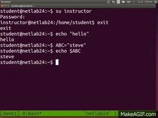
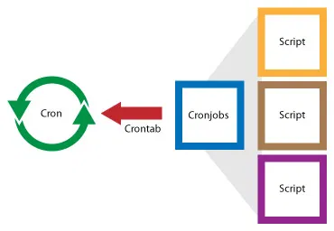
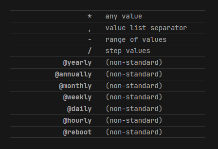

Automatización de Procesos con Bash y Linux
Unidad de Gobierno de Datos
Julio 2025
Contenidos de la clase

Bash y Linux
- Introducción a Linux y la terminal
- Scripts bash básicos
- Comandos esenciales de bash
- Variables y estructuras de control
- Manipulación de archivos y directorios
- Pipes y redirecciones
Automatización
- Qué es cron y para qué sirve
- Programación de tareas automáticas
- Monitoreo de uso de recursos
- Automatización de reportes
- Logging y manejo de errores
- Buenas prácticas
Objetivo de la clase
Quedar habilitado en el uso básico de la terminal Linux
Entender la utilidad de la automatización de procesos
Quedar habilitados en el uso básico de cron para programar tareas
Aprender a monitorear recursos del sistema
¿Por qué automatizar procesos?
Reduce errores humanos: los procesos manuales son propensos a errores
Ahorra tiempo: las tareas repetitivas consumen tiempo valioso
Mejora la consistencia: los procesos automatizados son predecibles
Permite trabajo 24/7: los procesos pueden ejecutarse sin supervisión
- Facilita el escalamiento: es más fácil procesar grandes volúmenes de datos
- Libera recursos humanos: el equipo puede enfocarse en tareas de mayor valor
Nos protege de:
- Olvidos en procesos críticos
- Inconsistencias en la ejecución de tareas
- Sobrecarga de trabajo manual

Introducción a Linux y la Terminal
Linux es el sistema operativo más utilizado en servidores y para automatización

¿Por qué Linux para automatización?
- Estabilidad y confiabilidad
- Herramientas nativas para automatización
- Control total sobre el sistema
- Eficiencia en el uso de recursos
- Amplia disponibilidad en servidores
Comandos Básicos de Bash
La terminal es nuestra herramienta principal para automatización
Comandos Básicos de Bash
Visualización y manipulación de contenido
cat archivo.txt # Mostrar contenido completo
head archivo.txt # Primeras 10 líneas
tail archivo.txt # Últimas 10 líneas
tail -f archivo.log # Seguir archivo en tiempo real (útil para logs)
grep "patrón" archivo # Buscar texto en archivo
wc -l archivo # Contar líneasInformación del sistema
¡Probemos estos comandos básicos!
Scripts Bash Básicos
Un script bash es un archivo de texto que contiene comandos que se ejecutan secuencialmente
Permisos en Linux
Los permisos controlan quién puede leer, escribir o ejecutar archivos y directorios
Estructura de permisos:
ls -la archivo.sh
-rwxr-xr-- 1 usuario grupo 1234 jul 30 10:30 archivo.sh
│||││││││
│||│││││└─── otros: ejecución
│||││││└──── otros: escritura
│||│││└───── otros: lectura
│||││└────── grupo: ejecución
│||│└─────── grupo: escritura
│||└──────── grupo: lectura
||└───────── propietario: ejecución
|└────────── propietario: escritura
└─────────── propietario: lectura 
Permisos en Linux
Comandos para cambiar permisos:
Cambiar propietario:
Tener una noción de cómo funcionan los permisos es esencial para la seguridad y funcionamiento de scripts!
Variables y Estructuras de Control
Variables
Variables y Estructuras de Control
Bucles
#!/bin/bash
# Bucle for con lista
for archivo in *.csv; do
echo "Procesando: $archivo"
# Aquí iría el procesamiento
done
# Bucle for con rango
for i in {1..5}; do
echo "Iteración $i"
done
# Bucle while
contador=1
while [ $contador -le 3 ]; do
echo "Ejecución número $contador"
contador=$((contador + 1))
donePipes y Redirecciones
Los pipes (|) y redirecciones (>, >>) son fundamentales para automatización
Pipes: pasar la salida de un comando a otro
¿Qué es Cron?
Cron es un programador de tareas basado en tiempo en sistemas Unix/Linux
¿Para qué sirve?
- Ejecutar scripts automáticamente a horas específicas
- Procesar datos diariamente, semanalmente, mensualmente
- Generar reportes automatizados
- Hacer backups programados
- Limpiar archivos temporales
- Monitorear sistemas
¿Cómo funciona?
- Cron es un daemon (servicio) que se ejecuta en segundo plano
- Lee archivo llamado “crontab” que contiene programación de las tareas
- Verifica cada minuto si hay tareas programadas para ejecutar
- Ejecuta automáticamente los scripts en el momento especificado
- Cada usuario puede tener su propio crontab
- Existe también un crontab del sistema para tareas administrativas
- Los logs de ejecución se guardan automáticamente para monitoreo

Sintaxis de Cron
La sintaxis de cron tiene 5 campos seguidos del comando a ejecutar:
* * * * * comando
│ │ │ │ │
│ │ │ │ └─── día de la semana (0-6, 0 y 0 = domingo)
│ │ │ └───── mes (1-12)
│ │ └─────── día del mes (1-31)
│ └───────── hora (0-23)
└─────────── minuto (0-59)
Ejemplos básicos:
# Ejecutar todos los días a las 2:30 AM
30 2 * * * /home/usuario/scripts/backup.sh
# Ejecutar cada lunes a las 9:00 AM
0 9 * * 1 /home/usuario/scripts/reporte_semanal.sh
# Ejecutar cada 15 minutos
*/15 * * * * /home/usuario/scripts/monitoreo.sh
# Ejecutar el primer día de cada mes a medianoche
0 0 1 * * /home/usuario/scripts/reporte_mensual.shHonestamente la sintaxis es un poco confusa. Recomendamos usar crontab guru para chequear que sus scripts vayan a correr cuando quieran que corran.
Trabajando con Crontab
Comandos para gestionar crontab:
crontab -l # Listar tareas programadas actuales
crontab -e # Editar crontab (abre editor)
crontab -r # Eliminar todas las tareas programadas
crontab archivo # Cargar tareas desde un archivoEjemplo práctico: programar un script de procesamiento
# Editamos crontab
crontab -e
# Agregamos una línea para ejecutar procesamiento diario a las 6 AM
# Éxitos y errores en un solo lugar
0 6 * * * /home/usuario/scripts/procesar_datos.sh >> /home/usuario/logs/procesamiento.log 2>&1
# Errores y éxitos en lugares separados:
0 6 * * * /home/usuario/scripts/procesar_datos.sh >> /home/usuario/logs/procesamiento.log 2>> /home/usuario/logs/error.logVariables de entorno en cron:
¡Programemos nuestras primeras tareas con cron!
Monitoreo de Uso de Recursos
Es crucial monitorear los recursos del sistema para asegurar el buen funcionamiento
Comandos para monitoreo:
# CPU y memoria en tiempo real
top
htop # Versión mejorada de top (si está instalado)
# Uso de disco
df -h # Espacio disponible por partición
du -sh * # Tamaño de directorios actuales
# Memoria
free -h # Memoria RAM disponible
# Procesos específicos
ps aux | grep python # Buscar procesos de Python
pgrep -f "mi_script" # Buscar proceso por nombreScript para monitoreo automático:
#!/bin/bash
# monitoreo.sh
echo "=== Reporte de Sistema $(date) ===" >> /var/log/sistema.log
echo "CPU y Memoria:" >> /var/log/sistema.log
top -bn1 | head -5 >> /var/log/sistema.log
echo "Espacio en disco:" >> /var/log/sistema.log
df -h >> /var/log/sistema.log
echo "================================" >> /var/log/sistema.logAutomatización de Reportes
Combinemos todo lo aprendido para automatizar la generación de reportes
Script completo de automatización:
#!/bin/bash
# generar_reporte.sh
# Variables
FECHA=$(date +"%Y-%m-%d")
DIRECTORIO_DATOS="/home/usuario/datos"
DIRECTORIO_REPORTES="/home/usuario/reportes"
ARCHIVO_LOG="/home/usuario/logs/reportes.log"
# Función para logging
log_mensaje() {
echo "$(date '+%Y-%m-%d %H:%M:%S') - $1" >> $ARCHIVO_LOG
}
# Inicio del proceso
log_mensaje "Iniciando generación de reporte"
# Verificar que existe el directorio de datos
if [ ! -d "$DIRECTORIO_DATOS" ]; then
log_mensaje "ERROR: Directorio de datos no existe"
exit 1
fi
# Crear directorio de reportes si no existe
mkdir -p "$DIRECTORIO_REPORTES"
# Procesar datos (ejemplo con R)
Rscript /home/usuario/scripts/procesar_datos.R "$DIRECTORIO_DATOS" "$DIRECTORIO_REPORTES/reporte_$FECHA.html"
# Verificar si el reporte se generó correctamente
if [ $? -eq 0 ]; then
log_mensaje "Reporte generado exitosamente: reporte_$FECHA.html"
else
log_mensaje "ERROR: Falló la generación del reporte"
exit 1
fi
# Limpiar archivos temporales de más de 7 días
find /tmp -name "temp_*" -mtime +7 -delete
log_mensaje "Archivos temporales antiguos eliminados"
# Comprimir reportes antiguos (más de 30 días)
find "$DIRECTORIO_REPORTES" -name "*.html" -mtime +30 -exec gzip {} \;
log_mensaje "Reportes antiguos comprimidos"
# Enviar notificación por email (si está configurado)
if command -v mail &> /dev/null; then
echo "Reporte diario generado: reporte_$FECHA.html" | mail -s "Reporte Diario" admin@ine.gob.cl
log_mensaje "Notificación enviada por email"
fi
log_mensaje "Proceso completado exitosamente"Automatización de Reportes
Programar en cron:
Logging y Manejo de Errores
Es fundamental tener un buen sistema de logging para depurar problemas
Estructura básica de logging:
#!/bin/bash
# Script con logging robusto
SCRIPT_NAME=$(basename "$0")
LOG_FILE="/var/log/$SCRIPT_NAME.log"
# Función de logging
log() {
local nivel=$1
shift
echo "$(date '+%Y-%m-%d %H:%M:%S') [$nivel] $SCRIPT_NAME: $*" >> $LOG_FILE
}
# Capturar errores automáticamente
set -e # Salir si cualquier comando falla
trap 'log ERROR "Script falló en línea $LINENO"' ERR
# Uso del logging
log INFO "Iniciando proceso"
# Ejemplo de verificación con logging
if [ ! -f "archivo_requerido.txt" ]; then
log ERROR "Archivo requerido no encontrado"
exit 1
fi
log INFO "Archivo encontrado, continuando..."Buenas Prácticas
Para scripts bash:
- Usar rutas absolutas en cron (no asume variables de entorno)
- Validar que existen archivos y directorios antes de usarlos
- Usar logging consistente
- Establecer timeouts para comandos que pueden colgarse
- Usar variables para valores que pueden cambiar
- Comentar el código adecuadamente
Para cron:
- Redirigir siempre la salida a archivos de log
- Usar rutas absolutas para todos los comandos y archivos
- Establecer variables de entorno necesarias en el crontab
- Probar scripts manualmente antes de programarlos
- Monitorear los logs regularmente
Para monitoreo:
- Establecer alertas para recursos críticos
- Mantener históricos de uso de recursos
- Automatizar la limpieza de logs antiguos
Ejemplo Práctico Completo
Vamos a crear un sistema completo de automatización:
# Estructura de archivos
/home/usuario/
├── scripts/
│ ├── procesar_datos.sh
│ ├── monitoreo.sh
│ └── limpiar_sistema.sh
├── logs/
├── datos/
└── reportes/¡Implementemos un ejemplo completo paso a paso!
- Crear la estructura de directorios
- Escribir scripts de procesamiento
- Configurar monitoreo
- Programar tareas en cron
- Probar el sistema completo
Torpedo de Comandos
Material de Consulta

Automatización de Procesos con Bash y Linux
Unidad de Gobierno de Datos
Julio 2025

Unidad de Gobiernos de Datos